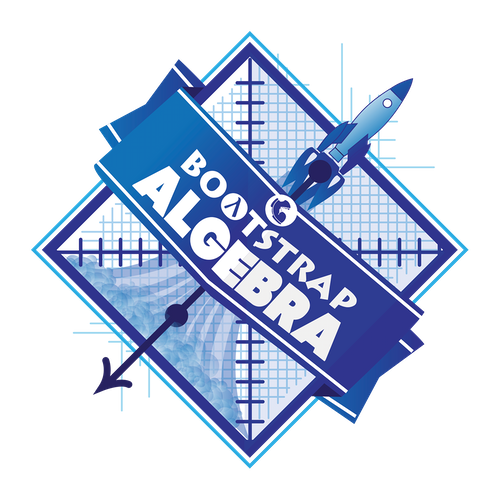

Pathway P narrative

{kind=link}
Lesson Plans
Piecewise Functions and Conditionals-
Students learn how to define a function so that it behaves differently depending on the input.
Ordering Student Workbooks?
While we give our workbooks away as a PDF, we understand that printing them yourself can be expensive! You can purchase beautifully-bound copies of the student workbook from Lulu.com. Click here to order.
Other Resources
Of course, there’s more to a curriculum than software and lesson plans! We also provide a number of resources to educators, including standards alignment, a complete student workbook, an answer key for the programming exercises and a forum where they can ask questions and share ideas.
-
Glossary — A list of vocabulary words used in this pathway. We also provide a bilingual glossary, which defines all vocabulary words across our lessons in English and Spanish.
-
Standards Alignment — Find out how our materials align with National and State Standards, as well as some of the most commonly used math textbooks.
-
Workbook — Sometimes, the best way for students to get real thinking done is to step away from the keyboard! Our lesson plans are tightly integrated with the Student Workbook, allowing for paper-and-pencil practice and activities that don’t require a computer.
-
Teacher-Only Resources — We also offer several teachers-only materials, including an answer key to the student workbook, keys to all the exercises, and pre- and post-tests for teachers who are participating in our research study. For access to these materials, please fill out the password request form. We’ll get back to you soon with the necessary login information.
-
Online Community (Discourse) — Want to be kept up-to-date about Bootstrap events, workshops, and curricular changes? Want to ask a question or pose a lesson idea for other Bootstrap teachers? These forums are the place to do it.
Pathway pages are entirely optional!
By default, the build script will create this page using all of the lessons defined in lesson-order.txt. It will also add boilerplate text from shared/langs/XYZ/defines.rkt.
99% of the time, you will not need a pathway page like this one
As of fall2022, the only time it’s used is for Physics, History and Hour of Code — as none of those pathways have traditional lesssons.
These materials were developed partly through support of the National Science Foundation,
(awards 1042210, 1535276, 1648684, and 1738598).  Bootstrap by the Bootstrap Community is licensed under a Creative Commons 4.0 Unported License. This license does not grant permission to run training or professional development. Offering training or professional development with materials substantially derived from Bootstrap must be approved in writing by a Bootstrap Director. Permissions beyond the scope of this license, such as to run training, may be available by contacting contact@BootstrapWorld.org.
Bootstrap by the Bootstrap Community is licensed under a Creative Commons 4.0 Unported License. This license does not grant permission to run training or professional development. Offering training or professional development with materials substantially derived from Bootstrap must be approved in writing by a Bootstrap Director. Permissions beyond the scope of this license, such as to run training, may be available by contacting contact@BootstrapWorld.org.